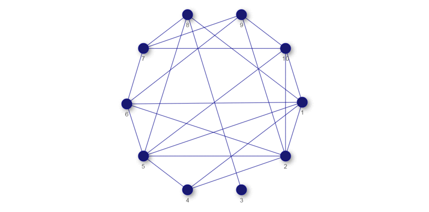

Details - University Courses
Following is a quick reference to different courses (mostly graduate level) that I completed during my studies. I created this page to provide more information to different graduate schools and comprehend my application. Please note, owing to copyright issues, I cannot give full course contents except short outlines. But if required I may disclose them with special permission from my instructors. Please send a short email if you need to.
Courses during masters:
Core Phase:
Four PhD level core courses we all had to take at our first semester.
- Mathematics for Economists (6 ECTS): Contents - Basic Analysis, Linear Algebra and Optimization theory [see outline for details]. Required textbook: De la Fuente, A. (2000). Mathematical methods and models for economists. Cambridge University Press.
- Advanced Microeconomics (8 ECTS): First Micro theory course. The first half covered Consumer and Producer Choice theory, and in second we had Game theory. Professor Nicolas Schutz's made the course contents open to public. To see please check his webpage. The course is titled as "E701 - Advanced Microeconomics I (PhD.).
- Advanced Macroeconomics (8 ECTS):
Roughly we covered neoclassical growth model (continuous and discrete time), overlapping generations (OLG) model, short review on Markov chains and recursive methods, heterogeneous agent models - in particular - idiosyncratic shocks and incomplete Insurance problems and complete markets model - in particular - Arrow-Debreu and Arrow securities. Finally we had a brief overview on asset pricing. See outline for more details.
- Advanced Econometrics (8 ECTS):
First Econometrics course in the PhD sequence. It started from measure theoretic definitions of probability and then gradually covered convergence concepts, conditional expectation, estimation and testing [see outline].
.
Specialization Phase:
At my specialization phase I mostly took courses offered at the chair of Statistics and Econometrics.
- Financial Time Series (5 ECTS):
It was a seminar course on theoretical times series. Seminar topics include different properties of ARCH and GARCH models, Threshold AR models, Bilinear models and Random coefficient AR models [outline].
- Empirical Environmental Economics (5 ECTS):
This seminar covered recent empirical research in Environmental Economics, in particular on air pollution control [outline].
- High-Dimensional Covariance Estimation (5 ECTS):
Initially the plan of this seminar was to offer contents from high dimensional covariance estimation. But because many of us were also interested in high dimensional statistics, later this course had topics both from high dimensional statistics and high dimensional covariance estimation [outline].
- Fundamentals of Machine Learning (8 ECTS):
One of the very first courses that I attended at the faculty of Mathematics and Computer Science at the University of Heidelberg. I was introduced to many new methods and a different way of analyzing data. Professor Ulrich Köthe created a webpage for the course. Last time I checked it was still available. Please click here to go to the page.
- Impact Evaluation, Treatment Effects, Causal Analysis (5 ECTS):
The course covered some recent methods of applied microeconometrics; eg. RCTs, matching, IV estimation, DID and RDD [outline].
- Advanced Time Series Analysis (9 ECTS):
It was a PhD level theory course on time series analysis. Please see the outline and comments on reading. The outline is very brief, please look at the comments on reading for more details.
- Microeconometric Methods: Duration, Count Data, and Censored Regression Analysis (9 ECTS):
We covered topics from duration and hazard models, sampling schemes, censoring, maximum likelihood estimation of duration models, unobserved heterogeneity, multiple durations (panel data models), treatment analysis, count data models, censored regression models and sample selection models [outline].
- Advanced Microeconometrics (9.5 ECTS):
The course covered fundamental methods for microeconomic data including; maximum likelihood estimation, GMM estimation, quantile regression methods, bootstrap sampling, non parametric econometrics (mostly density estimation) and Bayesian methods [outline].
- Dynamic Stochastic Networks (5 ECTS):
The seminar covered topics from network theory and network analysis. Please see the outline.
Master Thesis:
Title:
Lasso & Vector Autoregressive Models - With Application to Dynamic Stochastic Networks.
Supervisor: Professor Carsten Jentsch, Chair of Statistics, Dept. of Economics at University of Mannheim.
Summary: My thesis was a combination of literature review about LASSO estimation (both for i.i.d. setup and VAR models) and applying it to a new setting. The novel section was looking at binary time series models with many variables together and fitting with LASSO. Then we showed how this model can have connections to dynamic stochastic networks. Using LASSO we estimated the probabilities of the networks. Previous work analyzed discrete time series models but not including many variables. Too many variables in VAR is computationally very demanding and model selection and other methods can be very difficult to implement. We took high dimensional approach of fitting the model using LASSO (Tibshirani, R. (1996). Regression shrinkage and selection via the lasso. J. Royal. Statist. Soc B., Vol. 58, No. 1, pages 267-288)). For fitting in particular, we used "Coordinate Descent" algorithm.
The dynamic network that we looked differs to what "dynamic" may mean in many network settings. In many dynamic networks the dynamics are meant to be how the nodes evolve over time. We looked at dynamics over edges. So at every time period, a particular edge between any pair of nodes are random and they may change over time.
To have a rough idea about the dynamic networks that we are considering, have a look at the following network of 10 nodes (45 possible edges). Note how the edges appear and disappear. In principle, each network is realized at a particular time. It then shows how it changes over time. We created these series of networks with our own specified data generating process. In the thesis work, we estimated the probabilities (of this kind) of network formation.

Not part of required ECTS (without grade):
I attended two other courses at the faculty of Mathematics and Computer Science at the University of Heidelberg which are not part of my 121.5 ECTS (120 is the required) at the University of Mannheim.
-
High Dimensional Statistics and Empirical Process Theory (Summer 2016): The course was taught by Professor Enno Maammen. At first half it covered empirical process theory and the second part was about high dimensional statistics. I attended the lectures of the second part. Contents in short - supervised classification, LASSO estimator - order of convergence, numerical calculation and statistical inference and mixing least squares estimators, sparsity pattern aggregation and exponential smoothing.
-
Statistics II (Winter 2016): Professor Jan Johannes made the course page open for everyone, to see please click here. Here is a short list of contents: M- and Z- estimator (extremum estimator), Contiguity, Local asymptotic normality, Non-parametric statistics: local smoothing, Non-parametric statistics: orthogonal series estimation and Minimax optimality.
Courses during undergraduate studies:
I also give a very short overview of the courses that I attended during my bachelor studies.
Economics: In total I took 20 (16 required for major + 4 electives) courses from the Economics department, ranging from introductory to advanced level courses, notably 3 of microeconomics, 3 of macroeconomics, 2 courses on mathematical economics, 2 courses on econometrics and others related to different areas; e.g. international trade, public finance, environmental economics and economic growth
Mathematics: I took 4 mathematics courses from the department of Mathematics and Natural Science which were the following :Differential Calculus and Coordinate Geometry, Integral Calculus and Differential Equations, Linear Algebra and Multivariate Calculus and Real Analysis. None of these courses were required to complete the degree, but I took them to assist me in my journey at graduate school.